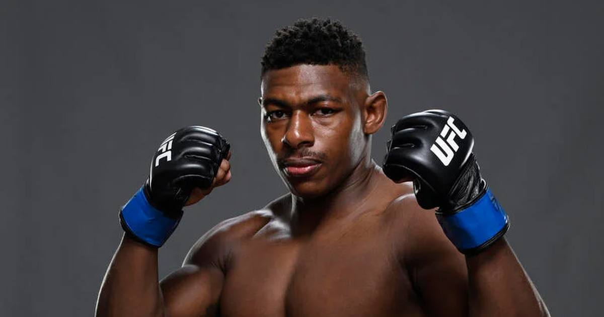

Joaquin Buckley Announces He'll Retire After One More Fight, Moved by His Grandmother's Plea
Five days after a brutal second-round knee KO in Edmonton, Joaquin Buckley — the man with arguably the greatest knockout in MMA history — says his next UFC fight will be his last. His grandmother's phone call changed everything.

Five days after suffering a brutal second-round knee KO from Mike Malott in the UFC Fight Night 291 main event in Edmonton, welterweight star Joaquin Buckley announced Thursday that his next UFC fight will be his last.
The Moment
In an emotional video, the 32-year-old said a phone call with his grandmother — who prayed for him and told him to retire because "your mind is your biggest tool and your biggest asset" — changed his mind after he initially vowed to keep fighting.
The Resume
• Record: 21-9 overall, 11-7 in the UFC over six years
• Owner of arguably the greatest knockout in MMA history — the spinning back kick on Impa Kasanganay
• Owned a six-fight win streak in 2023-24 with four stoppages before the skid
• Three straight losses: Kamaru Usman (decision), Sean Brady (decision), Malott (second-round knee KO, Oct. 17)
The Why
"This is the last one." Buckley says he can't leave on a loss — so one more fight, one farewell. Opponent, date and venue not yet announced.
Sources: MMA Junkie (USA Today) — 'Joaquin Buckley announces surprising plan for UFC retirement' · BJPenn.com — 'BREAKING | Joaquin Buckley announces he'll retire after next UFC fight'
Gear up: Fanatics